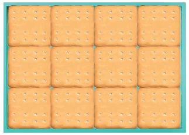
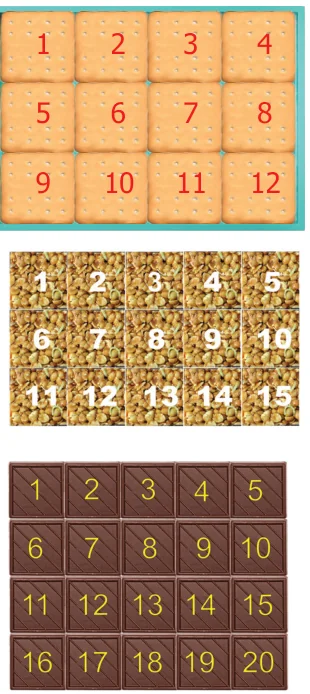
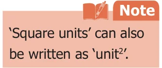
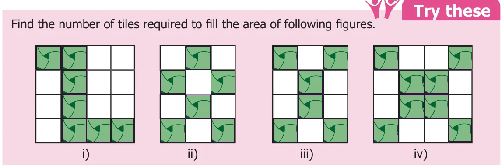
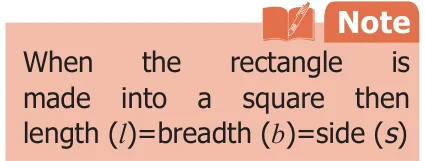
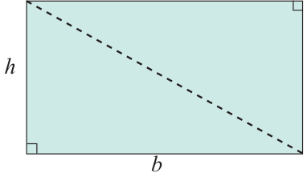
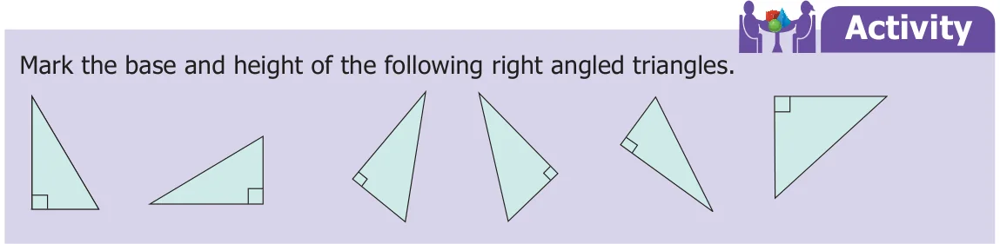

Recall the 'Apoorva and her biscuits arrangement' in the beginning of this chapter. We do not know the measure of the side of the biscuit. But we know it is in the shape of a square. Let its side be 1 unit. The tray can hold 12 square biscuits (square units). That is, 12 square biscuits (square units) occupy the entire surface of the tray. This space of the tray is called the Area of the tray. Thus, the area of any closed shape is the surface occupied by the number of unit squares within its boundary. Suppose each side of a biscuit is of 1 inch length, then the area of the tray is 12 square inches.
3.3.1 Area of a Rectangle

As the above tray is in the shape of a rectangle, split it into small and uniform squares called unit squares. There are 4 unit squares along its length and 3 unit squares along its breadth. Totally, 12 square biscuits occupy this rectangle and so the area of this rectangle is 12 square units.
Suresh brought a groundnut burfi packet to school as snacks to eat during the break. As he peeled off the cover, he saw that there are 3 rows and each row has 5 square pieces. What he sees here is that the total number of small squares in the given burfi is 15. So, the area of the given rectangular burfi is 15 square burfi pieces.
Tamizhazhagi wants to share a chocolate bar with her friends on her birthday. The chocolate bar that she has bought has 5 square pieces horizontally and 4 square pieces vertically. She finds that there are 20 identical unit square chocolate pieces so that she can give it to 19 of her friends and have 1 for herself.
Here, the total number of square chocolate pieces is 20, which represents the area of the whole chocolate bar.

The total number of squares in all these cases can be arrived by multiplying the number of squares along its length with the number of squares along its breadth instead of counting them.
Therefore the area of any rectangle \(= (\text{length} \times \text{breadth})\) square units.
\(= (l \times b)\) sq. units.

Example 9 Find the area of a rectangle of length 12 cm and breadth 7 cm.
Solution
Length of the rectangle, \(l = 12\) cm.
Breadth of the rectangle, \(b = 7\) cm.
Area of the rectangle \(A = (l \times b)\) sq. units.
\(= 12 \times 7 = 84\) sq. cm.
3.3.2 Area of a Square
If the length and breadth of a rectangle are equal, then it becomes a square.
Area of the rectangle \(= (\text{length} \times \text{breadth})\) square units.
\(= (\text{side} \times \text{side})\) sq. units.
\(= (s \times s)\) sq. units.
\(=\) Area of a square
Therefore area of a square \(= (s \times s)\) sq. units.

Example 10 Find the area of a square of side 15 cm.
Solution
Side of the square, \(s = 15\) cm
Area of the square, \(A = (s \times s)\) sq. units.
\(= 15 \times 15\)
\(= 225\) sq. cm. (or) 225 \(\text{cm}^2\)
3.3.3 Area of a Right Angled Triangle
In a right angled triangle one of the sides containing the right angle is treated as its base (\(b\) units) and the other side as its height (\(h\) units).

When a rectangular sheet is cut along its diagonal, two right angled triangles are obtained.
Area of two right angled triangles \(=\) Area of the rectangle
\(2 \times\) Area of a right angled triangle \(= l \times b\)
Area of the right angled triangle \(= \frac{1}{2}(l \times b)\) sq. units.
The length and breadth of the rectangle are respectively the base (\(b\)) and height (\(h\)) of the right angled triangle.
Hence, area of the right angled triangle \(= \frac{1}{2}(b \times h)\) sq. units.

Example 11 Find the area of a right angled triangle whose base is 18 cm and height is 12 cm.
Solution
Base, \(b = 18\) cm
Height, \(h = 12\) cm
Area, \(A = \frac{1}{2}(b \times h)\) sq. units
\(= \frac{1}{2}(18 \times 12)\)
\(= 108\) sq. cm. (or) 108 \(\text{cm}^2\)
Try these
Draw the following in a graph sheet.
- Two different rectangles whose areas are 16 \(\text{cm}^2\) each.
- A shape with perimeter 14 cm and area 12 sq. cm.
- A shape with area 36 sq. cm.
- Form different shapes using 4 unit squares and find their perimeter and area. (Sides of the squares must fit exactly)